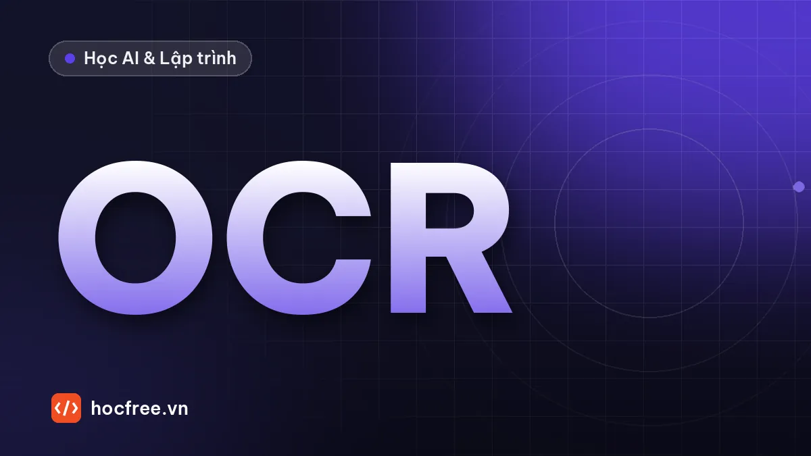

OCR với Tesseract: tiền xử lý ảnh, chọn PSM và độ tin cậy từng từ
Cài Tesseract, xây pipeline tiền xử lý đo được hiệu quả, chọn PSM, whitelist và dùng độ tin cậy từng từ để quyết định OK hay không đọc được.

Học xong bài này, bạn sẽ
- Tiền xử lý để OCR đọc đúng
- Chọn chế độ PSM, giới hạn ký tự
- Lấy độ tin cậy từng từ
Nên học trước: OCR và OCV trong công nghiệp
Nội dung bài viết
Bài OCR và OCV trong công nghiệp đã cho bạn bức tranh chung: quy trình định vị, chuẩn hóa, nhận dạng, kiểm tra định dạng. Bài này đi vào công cụ OCR mã nguồn mở lâu đời nhất: Tesseract. Tesseract đọc rất tốt văn bản in rõ ràng như trang sách, nhưng đưa thẳng ảnh chụp trên dây chuyền vào thì kết quả thường tệ, vì ảnh công nghiệp khác xa trang sách: chữ nhỏ, sáng không đều, chữ trắng trên nền tối, nhiễu, nghiêng, chữ in chấm. Phần lớn công việc vì thế nằm ở tiền xử lý: biến ảnh thực tế thành "trang sách" mà Tesseract thích. Bạn sẽ xây một pipeline tiền xử lý, đo chất lượng ảnh trước và sau, chọn đúng chế độ phân đoạn (PSM), giới hạn ký tự, và dùng độ tin cậy từng từ để quyết định. Bài sau, OCR bằng Deep Learning, dành cho những trường hợp tiền xử lý không cứu được.
--psm, --oem, whitelist cho từng bài toán; đọc độ tin cậy từng từ bằng image_to_data để quyết định OK/NOREAD; đo tỉ lệ đọc đúng hạn dùng trên 10 ảnh mẫu trước và sau tiền xử lý.1. Tesseract hoạt động thế nào
Tesseract (giấy phép Apache 2.0) xử lý ảnh theo ba bước: nhị phân hóa (mặc định dùng ngưỡng Otsu toàn cục), phân tích bố cục (tìm khối, dòng, từ) và nhận dạng từng dòng. Từ phiên bản 4, bộ nhận dạng chính là mạng LSTM đọc cả dòng; bộ nhận dạng cũ (legacy, so khớp hình dạng ký tự) vẫn còn trong một số file dữ liệu. Mô hình cho từng ngôn ngữ nằm trong file .traineddata (ví dụ eng, vie), có ba bộ: tessdata_fast (nhanh, mặc định khi cài từ gói), tessdata_best (chính xác hơn, chậm hơn) và tessdata (gồm cả mô hình legacy).
Điều quan trọng cho kỹ sư vision: Tesseract được thiết kế cho tài liệu. Tài liệu của Tesseract đưa ra các khuyến nghị về chất lượng ảnh mà ta sẽ biến thành mục tiêu đo được:
| Khuyến nghị | Lý do | Mục tiêu đo trong bài |
|---|---|---|
| Chữ tối trên nền sáng | Từ bản 4.x, mô hình LSTM được huấn luyện với chữ tối nền sáng; ảnh âm bản cho kết quả kém | Tỉ lệ pixel "mực" nhỏ hơn 50% |
| Độ phân giải tương đương ít nhất 300 DPI | Độ chính xác giảm nhanh khi chữ quá nhỏ (dưới khoảng 10 pt ở 300 DPI) | Chiều cao chữ hoa, chữ số khoảng 30–40 px |
| Nhị phân sạch, ít nhiễu | Nhiễu bị phân tích bố cục coi là ký tự hoặc làm vỡ nét | Số thành phần liên thông gần bằng số ký tự |
| Dòng chữ thẳng | Dòng nghiêng làm phân tích dòng sai | Góc nghiêng dưới khoảng 0,5° |
| Có viền trắng quanh chữ | Chữ sát mép ảnh dễ bị bỏ sót | Thêm viền khoảng 10 px |
2. Cài đặt
Tesseract là một chương trình riêng; pytesseract chỉ là lớp Python gọi chương trình đó qua dòng lệnh. Phải cài cả hai.
# Windows: tải bộ cài Tesseract do UB Mannheim đóng gói (trang github.com/UB-Mannheim/tesseract/wiki),
# khi cài chọn thêm dữ liệu ngôn ngữ cần dùng; mặc định cài vào C:\Program Files\Tesseract-OCR
# Ubuntu/Debian:
sudo apt install tesseract-ocr tesseract-ocr-vie
# macOS:
brew install tesseract
# Thư viện Python (mọi hệ điều hành):
pip install pytesseract opencv-python
# Kiểm tra:
tesseract --version
tesseract --list-langs# (minh họa) — cần chương trình Tesseract đã cài
import pytesseract
# Windows: nếu tesseract.exe chưa có trong PATH, chỉ đường dẫn trực tiếp
# pytesseract.pytesseract.tesseract_cmd = r"C:\Program Files\Tesseract-OCR\tesseract.exe"
print(pytesseract.get_tesseract_version())
print(pytesseract.get_languages(config=""))Môi trường chạy thử của bài không có chương trình Tesseract, nên các khối gọi pytesseract được đánh dấu minh họa để bạn chạy trên máy mình. Phần tiền xử lý, đo chất lượng ảnh, kiểm tra kết quả và vòng đánh giá đều chạy được; để đo tỉ lệ đọc trong bài, ta dùng một bộ đọc thay thế nhỏ (mục 5) với cùng giao diện, và bạn chỉ cần thay đúng một hàm để chạy với Tesseract.
3. Bộ 10 ảnh hạn dùng mẫu
Bài thực hành: đọc ngày hạn dùng (HSD) in trên bao bì từ 10 ảnh, mỗi ảnh mang một khó khăn điển hình ở nhà máy. Khối dưới tạo 10 ảnh 360×60 và file đáp án. Trên dây chuyền thật, bạn thay bằng 10 ảnh chụp và gõ đáp án vào CSV.
import csv
import os
import cv2
import numpy as np
os.makedirs("hsd", exist_ok=True)
FONT = cv2.FONT_HERSHEY_SIMPLEX
def ve_dong(chu, co=1.0, net=2, h=60, w=360):
"""Mặt nạ mực (0..1) của một dòng chữ căn giữa."""
a = np.zeros((h, w), np.uint8)
(tw, th), _ = cv2.getTextSize(chu, FONT, co, net)
cv2.putText(a, chu, ((w - tw) // 2, (h + th) // 2), FONT, co, 255, net, cv2.LINE_AA)
return a.astype(np.float32) / 255
def tao_anh(chu, kieu, rng):
m = ve_dong(chu, 0.55, 1) if kieu == "chữ nhỏ" else ve_dong(chu)
if kieu == "in chấm": # máy in phun: chỉ còn chấm trên lưới 4 px
m0, m = ve_dong(chu, 1.0, 4), np.zeros((60, 360), np.float32)
for y in range(0, 60, 4):
for x in range(0, 360, 4):
if m0[y, x] > 0.5:
cv2.circle(m, (x, y), 1, 1.0, -1)
if kieu == "nghiêng 6°":
m = cv2.warpAffine(m, cv2.getRotationMatrix2D((180, 30), 6, 1.0), (360, 60))
nen, muc = (150.0, 115.0) if kieu == "tương phản thấp" else (215.0, 40.0)
anh = nen + (muc - nen) * m
if kieu == "sáng không đều":
anh = anh * (0.35 + 0.75 * np.linspace(0, 1, 360)[None, :]) # đèn chiếu lệch một bên
if kieu == "âm bản":
anh = 255 - anh # chữ sáng (khắc laser) trên nền tối
if kieu == "nền sọc":
anh[:, ::6] = np.minimum(anh[:, ::6], 90) # hoa văn sọc mảnh trên bao bì
if kieu == "mờ":
anh = cv2.GaussianBlur(anh, (0, 0), 1.6)
anh = anh + rng.normal(0, 6, anh.shape)
if kieu == "nhiễu hạt":
r = rng.random(anh.shape)
anh[r < 0.03], anh[r > 0.97] = 30, 240 # hạt bụi, chấm sáng
return np.clip(anh, 0, 255).astype(np.uint8)
KIEU = ["rõ", "tương phản thấp", "sáng không đều", "chữ nhỏ", "âm bản",
"nhiễu hạt", "nghiêng 6°", "in chấm", "nền sọc", "mờ"]
rng = np.random.default_rng(3)
with open("hsd/dap_an.csv", "w", newline="", encoding="utf-8") as f:
ghi = csv.writer(f)
ghi.writerow(["file", "kieu", "hsd"])
for i, kieu in enumerate(KIEU):
hsd = f"{rng.integers(1, 29):02d}/{rng.integers(1, 13):02d}/20{rng.integers(26, 29)}"
ten = f"hsd/hsd_{i:02d}.png"
cv2.imwrite(ten, tao_anh("HSD " + hsd, kieu, rng))
ghi.writerow([ten, kieu, hsd])
print(f"{ten} {kieu:16s} đáp án {hsd}")hsd/hsd_00.png rõ đáp án 23/02/2026
hsd/hsd_01.png tương phản thấp đáp án 07/09/2028
hsd/hsd_02.png sáng không đều đáp án 10/06/2028
hsd/hsd_03.png chữ nhỏ đáp án 02/03/2026
hsd/hsd_04.png âm bản đáp án 11/10/2027
hsd/hsd_05.png nhiễu hạt đáp án 13/11/2026
hsd/hsd_06.png nghiêng 6° đáp án 16/12/2028
hsd/hsd_07.png in chấm đáp án 05/07/2026
hsd/hsd_08.png nền sọc đáp án 07/12/2026
hsd/hsd_09.png mờ đáp án 19/05/20264. Pipeline tiền xử lý và đo chất lượng ảnh
Mỗi bước của pipeline giải quyết một khuyến nghị ở mục 1. Thứ tự quan trọng:
- Đưa về chữ tối nền sáng: nhị phân Otsu thử; nếu lớp tối chiếm hơn nửa ảnh thì đó là nền, đảo ảnh.
- Làm phẳng nền: ước lượng nền bằng phép đóng (closing) với phần tử lớn hơn nét chữ (25×25), phép đóng xóa các chi tiết tối nhỏ (chữ) và giữ lại nền; rồi chia ảnh cho nền. Ánh sáng không đều biến mất.
- Nối chấm nếu là chữ in chấm (nhận biết qua số lượng lớn các thành phần nhỏ cỡ một chấm), làm trước lọc nhiễu, vì lọc trung vị sẽ xóa luôn các chấm.
- Lọc trung vị 3×3: xóa hạt nhiễu và đường kẻ mảnh 1 px, giữ cạnh chữ.
- Xoay thẳng: thử các góc −10° đến 10°, chọn góc làm hình chiếu theo hàng "nhọn" nhất (phương sai lớn nhất), vì khi dòng chữ nằm ngang, mực dồn vào ít hàng. Làm trước khi đo chiều cao chữ, vì dòng nghiêng trông "cao" hơn thật.
- Phóng to để chiều cao dòng chữ khoảng 40 px (nội suy bậc ba
INTER_CUBIC). - Nhị phân Otsu, xóa thành phần chạm mép (vết sọc, mép nhãn bị cắt vào ROI).
- Thêm viền trắng 10 px.
Hàm do_chat_luong đo các chỉ số ở bảng mục 1 để biết ảnh đã "giống trang sách" chưa. Độ dày nét ước lượng bằng công thức 2 × diện tích / chu vi: một nét dài L, dày w có diện tích ≈ L·w và chu vi ≈ 2L.
import csv
import cv2
import numpy as np
def do_chat_luong(xam):
"""Chỉ số chất lượng ảnh chữ: tỉ lệ mực, tương phản, chiều cao dòng, độ dày nét, số thành phần."""
t, nhi = cv2.threshold(xam, 0, 255, cv2.THRESH_BINARY_INV + cv2.THRESH_OTSU)
ti_le_muc = (nhi > 0).mean()
tuong_phan = abs(float(np.median(xam[nhi == 0])) - float(np.median(xam[nhi > 0])))
hang = np.where(nhi.mean(axis=1) > 255 * 0.02)[0]
cao = int(hang.max() - hang.min() + 1) if len(hang) else 0
cs, _ = cv2.findContours(nhi, cv2.RETR_EXTERNAL, cv2.CHAIN_APPROX_NONE)
lon = [c for c in cs if cv2.contourArea(c) > 20]
net = np.mean([2 * cv2.contourArea(c) / cv2.arcLength(c, True) for c in lon]) if lon else 0.0
return ti_le_muc, tuong_phan, cao, net, len(cs)
def goc_nghieng(nhi, pham_vi=10, buoc=0.5):
tot, goc_tot = -1.0, 0.0
tam = (nhi.shape[1] / 2, nhi.shape[0] / 2)
for goc in np.arange(-pham_vi, pham_vi + 1e-9, buoc):
r = cv2.warpAffine(nhi, cv2.getRotationMatrix2D(tam, goc, 1.0), nhi.shape[::-1], flags=cv2.INTER_NEAREST)
v = float(np.var(r.sum(axis=1, dtype=np.float64)))
if v > tot:
tot, goc_tot = v, float(goc)
return goc_tot
def tien_xu_ly(xam, cao_muc_tieu=40):
g = xam.copy()
t, _ = cv2.threshold(g, 0, 255, cv2.THRESH_BINARY + cv2.THRESH_OTSU)
if (g < t).mean() > 0.5: # 1. lớp tối là nền → âm bản → đảo
g = 255 - g
nen = cv2.morphologyEx(g, cv2.MORPH_CLOSE, cv2.getStructuringElement(cv2.MORPH_RECT, (25, 25)))
g = np.clip(g.astype(np.float32) / np.maximum(nen, 1) * 230, 0, 255).astype(np.uint8) # 2. làm phẳng nền
_, nhi = cv2.threshold(g, 0, 255, cv2.THRESH_BINARY_INV + cv2.THRESH_OTSU)
_, _, st, _ = cv2.connectedComponentsWithStats(nhi)
so_cham = int(((st[1:, cv2.CC_STAT_AREA] >= 4) & (st[1:, cv2.CC_STAT_AREA] <= 30)).sum())
if so_cham > 60: # 3. chữ in chấm → nối chấm (mở trên ảnh chữ tối)
g = cv2.morphologyEx(g, cv2.MORPH_OPEN, cv2.getStructuringElement(cv2.MORPH_ELLIPSE, (5, 5)))
g = cv2.medianBlur(g, 3) # 4. lọc trung vị
_, nhi = cv2.threshold(g, 0, 255, cv2.THRESH_BINARY_INV + cv2.THRESH_OTSU)
goc = goc_nghieng(nhi) # 5. xoay thẳng (trước khi đo chiều cao chữ)
if goc != 0:
M = cv2.getRotationMatrix2D((g.shape[1] / 2, g.shape[0] / 2), goc, 1.0)
g = cv2.warpAffine(g, M, g.shape[::-1], flags=cv2.INTER_LINEAR, borderMode=cv2.BORDER_REPLICATE)
_, nhi = cv2.threshold(g, 0, 255, cv2.THRESH_BINARY_INV + cv2.THRESH_OTSU)
hang = np.where(nhi.mean(axis=1) > 255 * 0.02)[0]
cao = hang.max() - hang.min() + 1 if len(hang) else cao_muc_tieu
k = cao_muc_tieu / cao
g = cv2.resize(g, None, fx=k, fy=k, interpolation=cv2.INTER_CUBIC) # 6. phóng to
_, nhi = cv2.threshold(g, 0, 255, cv2.THRESH_BINARY_INV + cv2.THRESH_OTSU) # 7. nhị phân
n, nhan, st, _ = cv2.connectedComponentsWithStats(nhi)
H, W = nhi.shape
for i in range(1, n): # xóa thành phần chạm mép
x, y, w, h, _ = st[i]
if x == 0 or y == 0 or x + w == W or y + h == H:
nhi[nhan == i] = 0
return cv2.copyMakeBorder(255 - nhi, 10, 10, 10, 10, cv2.BORDER_CONSTANT, value=255), goc # 8. viền
with open("hsd/dap_an.csv", encoding="utf-8") as f:
mau = list(csv.DictReader(f))
print(f"{'ảnh':16s} {'mực':>5s} {'t.phản':>6s} {'cao':>4s} {'nét':>4s} {'tp':>4s} → {'mực':>5s} {'cao':>4s} {'nét':>4s} {'tp':>4s} {'xoay':>5s}")
for m in mau:
xam = cv2.imread(m["file"], cv2.IMREAD_GRAYSCALE)
sau, goc = tien_xu_ly(xam)
cv2.imwrite(m["file"].replace("hsd_", "sau_"), sau)
a, b = do_chat_luong(xam), do_chat_luong(sau)
print(f"{m['kieu']:16s} {a[0]:5.0%} {a[1]:6.0f} {a[2]:4d} {a[3]:4.1f} {a[4]:4d} → "
f"{b[0]:5.0%} {b[2]:4d} {b[3]:4.1f} {b[4]:4d} {goc:5.1f}")ảnh mực t.phản cao nét tp → mực cao nét tp xoay
rõ 11% 172 24 4.4 13 → 9% 39 8.5 13 0.0
tương phản thấp 12% 32 23 5.1 80 → 9% 38 9.7 13 0.0
sáng không đều 49% 94 60 8.0 65 → 9% 39 9.8 13 0.0
chữ nhỏ 3% 154 11 2.4 13 → 3% 39 8.6 12 0.0
âm bản 90% 172 60 50.7 1 → 9% 39 8.2 13 0.0
nhiễu hạt 13% 176 57 3.6 480 → 9% 39 7.5 13 0.0
nghiêng 6° 11% 167 42 4.5 13 → 9% 39 8.7 13 -6.0
in chấm 4% 175 19 0.0 154 → 5% 41 5.2 50 0.0
nền sọc 26% 129 60 1.3 34 → 10% 38 8.3 14 0.0
mờ 15% 109 24 6.0 10 → 12% 38 10.1 10 0.0Đọc bảng (cột trái: ảnh gốc, cột phải: sau tiền xử lý; "tp" là số thành phần, chuỗi "HSD dd/mm/yyyy" có 13 ký tự không kể dấu cách):
- Âm bản: tỉ lệ "mực" của ảnh gốc trên 80%, tức Otsu coi nền là chữ. Sau khi đảo, về mức bình thường như các ảnh khác.
- Sáng không đều, nền sọc: ảnh gốc có tỉ lệ mực và số thành phần bất thường (nửa tối của ảnh, các sọc bị coi là mực); sau làm phẳng nền và lọc trung vị thì về đúng dòng chữ.
- Chữ nhỏ: dòng chữ chỉ cao 11 px, được phóng lên 40 px như các ảnh khác. Phóng to không thêm thông tin, nhưng đưa chữ về cỡ mà bộ nhận dạng được huấn luyện.
- Nhiễu hạt: hàng trăm thành phần (hạt nhiễu) về gần số ký tự.
- Nghiêng 6°: góc tìm được −6,0°, xoay ngược lại đúng 6°. Trên ảnh gốc, dòng nghiêng làm chiều cao đo được (42 px) lớn gần gấp đôi thật; vì vậy pipeline xoay thẳng trước rồi mới đo chiều cao để phóng to.
- In chấm: hơn trăm chấm rời được nhận ra và nối lại; số thành phần giảm mạnh nhưng chưa về đúng số ký tự (mục 5 sẽ cho thấy hậu quả).
5. Đo tỉ lệ đọc đúng trước và sau tiền xử lý
Bộ đọc thay thế dưới đây mô phỏng cách một OCR cổ điển làm việc: nhị phân Otsu toàn cục (giống mặc định của Tesseract), tách thành phần liên thông, tách khối chữ dính tại cột ít mực nhất, rồi so từng ô với mẫu của 14 ký tự được phép bằng NCC. Bảng mẫu chỉ có 14 ký tự đóng vai trò giống whitelist của Tesseract ở mục 6. Hàm doc_hsd lấy ngày từ chuỗi đọc được bằng biểu thức chính quy và kiểm tra đó là ngày có thật.
import csv
import re
from datetime import date
import cv2
import numpy as np
BANG = "0123456789/HSD" # các ký tự được phép (như whitelist)
def chuan_hoa(o):
return cv2.resize(o, (20, 32), interpolation=cv2.INTER_AREA).astype(np.float32)
MAU = {}
for c in BANG:
a = np.zeros((60, 50), np.uint8)
cv2.putText(a, c, (10, 45), cv2.FONT_HERSHEY_SIMPLEX, 1.0, 255, 2, cv2.LINE_AA)
x, y, w, h = cv2.boundingRect((a > 127).astype(np.uint8))
MAU[c] = chuan_hoa(a[y:y + h, x:x + w])
def tach_dinh(nhi, x, y, w, h):
"""Khối rộng hơn 1,15 lần chiều cao là chữ dính: cắt tại cột ít mực nhất ở khoảng giữa."""
if w <= 1.15 * h or w < 8:
return [(x, y, w, h)]
cot = nhi[y:y + h, x:x + w].sum(axis=0)
c = int(0.25 * w) + int(np.argmin(cot[int(0.25 * w):int(0.75 * w)]))
return tach_dinh(nhi, x, y, c, h) + tach_dinh(nhi, x + c, y, w - c, h)
def doc_thay_the(xam):
"""Bộ đọc thay thế: trả (chuỗi, điểm NCC thấp nhất) — cùng vai trò với pytesseract ở mục 6."""
_, nhi = cv2.threshold(xam, 0, 255, cv2.THRESH_BINARY_INV + cv2.THRESH_OTSU)
n, _, st, _ = cv2.connectedComponentsWithStats(nhi, connectivity=8)
tp = [tuple(int(v) for v in st[i][:4]) for i in range(1, n) if st[i, cv2.CC_STAT_AREA] >= 8]
if not tp:
return "", 0.0
h_max = max(t[3] for t in tp)
o_chu = []
for x, y, w, h in sorted(t for t in tp if t[3] >= 0.5 * h_max):
o_chu += tach_dinh(nhi, x, y, w, h)
chu, diem = "", []
for x, y, w, h in o_chu:
o = nhi[y:y + h, x:x + w]
r = np.where(o.max(axis=1) > 0)[0]
o = chuan_hoa(o[r.min():r.max() + 1])
s = {c: float(cv2.matchTemplate(o, m, cv2.TM_CCOEFF_NORMED)[0, 0]) for c, m in MAU.items()}
tot = max(s, key=s.get)
chu += tot
diem.append(s[tot])
return chu, min(diem)
def doc_hsd(chu):
"""Lấy dd/mm/yyyy từ chuỗi OCR; trả None nếu không có hoặc không phải ngày có thật."""
m = re.search(r"(\d{2})/(\d{2})/(\d{4})", chu.replace(" ", ""))
if not m:
return None
try:
date(int(m.group(3)), int(m.group(2)), int(m.group(1)))
except ValueError:
return None
return m.group(0)
with open("hsd/dap_an.csv", encoding="utf-8") as f:
mau = list(csv.DictReader(f))
dung = {"trước": 0, "sau": 0}
print(f"{'ảnh':16s} {'đáp án':10s} | {'trước: chuỗi đọc':18s} {'HSD':10s} | {'sau: chuỗi đọc':16s} {'HSD':10s}")
for m in mau:
dong = f"{m['kieu']:16s} {m['hsd']:10s}"
for nhan, ten in (("trước", m["file"]), ("sau", m["file"].replace("hsd_", "sau_"))):
chu, diem = doc_thay_the(cv2.imread(ten, cv2.IMREAD_GRAYSCALE))
hsd = doc_hsd(chu)
dung[nhan] += hsd == m["hsd"]
dau = "✓" if hsd == m["hsd"] else "✗"
dong += f" | {chu[:16]:16s} {dau} {str(hsd):10s}"
print(dong)
print(f"\nTỉ lệ đọc đúng HSD: trước {dung['trước']}/10, sau tiền xử lý {dung['sau']}/10")ảnh đáp án | trước: chuỗi đọc HSD | sau: chuỗi đọc HSD
rõ 23/02/2026 | HSD23/02/2026 ✓ 23/02/2026 | HSD23/02/2026 ✓ 23/02/2026
tương phản thấp 07/09/2028 | HSD07/09/2028 ✓ 07/09/2028 | HSD07/09/2028 ✓ 07/09/2028
sáng không đều 10/06/2028 | 0096 ✗ None | HSD10/06/2028 ✓ 10/06/2028
chữ nhỏ 02/03/2026 | HSD02/03/2026 ✓ 02/03/2026 | H9302/03/2026 ✓ 02/03/2026
âm bản 11/10/2027 | 0123132 ✗ None | HSD11/10/2027 ✓ 11/10/2027
nhiễu hạt 13/11/2026 | HSD13/11/2026 ✓ 13/11/2026 | HS013/11/2026 ✓ 13/11/2026
nghiêng 6° 16/12/2028 | HSD16/12/2028 ✓ 16/12/2028 | HSD16/12/2028 ✓ 16/12/2028
in chấm 05/07/2026 | ✗ None | H4571633SD1336 ✗ None
nền sọc 07/12/2026 | 0000000000HHH044 ✗ None | HSD07/12/2026 ✓ 07/12/2026
mờ 19/05/2026 | HSD19/05/2626 ✗ 19/05/2626 | HS019/05/2026 ✓ 19/05/2026
Tỉ lệ đọc đúng HSD: trước 5/10, sau tiền xử lý 9/10Tiền xử lý nâng tỉ lệ đọc đúng rõ rệt. Bốn ảnh được cứu là những khó khăn mà bộ đọc dựa trên Otsu toàn cục không tự xử lý được: sáng không đều, âm bản, nền sọc, và ảnh mờ (sau khi phóng to và nhị phân lại, hình dạng chữ số đủ rõ để không nhầm 0 thành 6). Hai chi tiết đáng chú ý:
- Ảnh "mờ" trước tiền xử lý đọc ra năm
2626: đây là đọc sai, nguy hiểm hơn không đọc được. Hàmdoc_hsdkhông chặn được vì 2626 vẫn là năm hợp lệ về lịch; trạm thật phải so thêm với khoảng hợp lý (ví dụ HSD trong vòng 1–36 tháng kể từ ngày sản xuất) hoặc với lệnh sản xuất. - Ảnh "in chấm" vẫn hỏng sau tiền xử lý: nối chấm làm chữ liền lại nhưng méo, bộ đọc học trên chữ nét liền không nhận ra. Tesseract gặp đúng vấn đề này với chữ in phun chấm. Giải pháp: điều chỉnh kích thước phần tử nối chấm theo khoảng cách chấm thực tế, dùng công cụ OCR có font chấm (phần mềm thương mại), hoặc huấn luyện mô hình riêng (bài OCR bằng Deep Learning).
Khi chạy với Tesseract trên máy bạn, chỉ cần thay doc_thay_the bằng hàm gọi Tesseract (mục 6) và giữ nguyên vòng đánh giá. Kết quả cụ thể sẽ khác, nhưng nguyên tắc giữ nguyên: luôn đo trước và sau trên cùng bộ ảnh có đáp án, đừng chỉnh pipeline bằng cảm giác nhìn một ảnh.
6. Gọi Tesseract: PSM, OEM và whitelist
Tham số quan trọng nhất là --psm (page segmentation mode, chế độ phân đoạn trang): nó nói cho Tesseract biết ảnh chứa gì, để bỏ qua bước phân tích bố cục vốn dành cho trang tài liệu.
| PSM | Ý nghĩa | Dùng khi |
|---|---|---|
| 3 | Tự động phân đoạn trang, không phát hiện hướng (mặc định) | Ảnh tài liệu nhiều đoạn |
| 4 | Một cột văn bản, cỡ chữ có thể khác nhau | Nhãn nhiều dòng thẳng hàng |
| 6 | Một khối văn bản đồng nhất | ROI chứa vài dòng cùng cỡ |
| 7 | Đúng một dòng chữ | Phổ biến nhất trong công nghiệp: ROI một dòng HSD, số lô, seri |
| 8 | Đúng một từ | Một mã không có dấu cách |
| 10 | Đúng một ký tự | Đã tự tách ký tự |
| 11, 12 | Chữ thưa, tìm càng nhiều càng tốt (12: kèm phát hiện hướng) | Chữ rải rác trên ảnh, không biết vị trí |
| 13 | Dòng thô, bỏ qua các xử lý riêng của Tesseract | Khi PSM 7 cho kết quả lạ |
Ngoài ra: PSM 0 chỉ phát hiện hướng và hệ chữ (OSD), PSM 1 phân đoạn tự động kèm OSD, PSM 5 khối chữ dọc, PSM 9 một từ trong vòng tròn. --oem chọn bộ nhận dạng: 0 legacy, 1 LSTM, 2 cả hai, 3 mặc định theo những gì có trong file .traineddata. Với dữ liệu tessdata_fast/tessdata_best chỉ có LSTM, nên dùng --oem 1 hoặc để mặc định.
Whitelist (-c tessedit_char_whitelist=...) giới hạn tập ký tự đầu ra, giảm mạnh các nhầm lẫn kiểu O/0. Bộ LSTM hỗ trợ whitelist từ Tesseract 4.1; với bản 4.0 tham số này bị bỏ qua. Với mã không phải từ ngữ, tắt từ điển (load_system_dawg, load_freq_dawg) để Tesseract không "sửa" mã thành từ tiếng Anh gần giống.
def cau_hinh_tesseract(psm=7, oem=1, whitelist=None, tat_tu_dien=True, dpi=None):
"""Tạo chuỗi config cho pytesseract.image_to_string / image_to_data."""
phan = [f"--oem {oem}", f"--psm {psm}"]
if dpi:
phan.append(f"--dpi {dpi}") # báo DPI khi ảnh không có thông tin DPI
if whitelist:
phan.append(f"-c tessedit_char_whitelist={whitelist}")
if tat_tu_dien:
phan += ["-c load_system_dawg=0", "-c load_freq_dawg=0"]
return " ".join(phan)
print(cau_hinh_tesseract(whitelist="0123456789/HSD"))
print(cau_hinh_tesseract(psm=8, whitelist="ABCDEFGHJKLMNPRSTUVWXYZ0123456789-"))--oem 1 --psm 7 -c tessedit_char_whitelist=0123456789/HSD -c load_system_dawg=0 -c load_freq_dawg=0
--oem 1 --psm 8 -c tessedit_char_whitelist=ABCDEFGHJKLMNPRSTUVWXYZ0123456789- -c load_system_dawg=0 -c load_freq_dawg=0Chú ý: whitelist không được chứa dấu cách (chuỗi config bị tách theo dấu cách). Muốn đọc cả dấu cách, đừng đưa nó vào whitelist; Tesseract vẫn tách từ theo khoảng trắng. Thay bộ đọc thay thế của mục 5 bằng Tesseract như sau:
# (minh họa) — cần chương trình Tesseract + pip install pytesseract
import csv
import time
import cv2
import pytesseract
CAU_HINH = "--oem 1 --psm 7 -c tessedit_char_whitelist=0123456789/HSD -c load_system_dawg=0 -c load_freq_dawg=0"
def doc_tesseract(xam):
chu = pytesseract.image_to_string(xam, lang="eng", config=CAU_HINH)
return chu.strip(), None
with open("hsd/dap_an.csv", encoding="utf-8") as f:
mau = list(csv.DictReader(f))
for nhan, doi in (("trước", lambda t: t), ("sau", lambda t: t.replace("hsd_", "sau_"))):
dung, t0 = 0, time.perf_counter()
for m in mau:
chu, _ = doc_tesseract(cv2.imread(doi(m["file"]), cv2.IMREAD_GRAYSCALE))
dung += doc_hsd(chu) == m["hsd"] # doc_hsd ở mục 5
print(f"{nhan}: {dung}/10 đúng, {(time.perf_counter() - t0) / len(mau) * 1000:.0f} ms/ảnh")pytesseract nhận trực tiếp mảng NumPy (ảnh xám hoặc RGB). Nếu đưa ảnh màu đọc bằng OpenCV, nhớ đổi BGR sang RGB. Mỗi lần gọi, pytesseract ghi ảnh ra file tạm và chạy chương trình tesseract, nên có chi phí cố định vài chục mili giây; với cycle time ngắn, hãy đo thời gian thật trên máy trạm (hoặc dùng thư viện gọi trực tiếp API C của Tesseract, như tesserocr, để tránh khởi động lại mỗi lần).
7. Độ tin cậy từng từ và quyết định
image_to_string chỉ trả chuỗi. Để quyết định OK hay NOREAD, dùng image_to_data: nó trả về bảng (dạng TSV) mỗi dòng là một phần tử bố cục, gồm level (1 trang, 2 khối, 3 đoạn, 4 dòng, 5 từ), vị trí left, top, width, height, conf (độ tin cậy 0–100 cho từ; −1 cho các cấp không phải từ) và text.
# (minh họa) — cần chương trình Tesseract + pip install pytesseract
import cv2
import pytesseract
xam = cv2.imread("hsd/sau_00.png", cv2.IMREAD_GRAYSCALE)
d = pytesseract.image_to_data(xam, config="--oem 1 --psm 7 -c tessedit_char_whitelist=0123456789/HSD",
output_type=pytesseract.Output.DICT)
for i, chu in enumerate(d["text"]):
if d["level"][i] == 5 and chu.strip():
print(chu, float(d["conf"][i]), (d["left"][i], d["top"][i], d["width"][i], d["height"][i]))Logic quyết định không phụ thuộc Tesseract, nên ta viết và thử trên dữ liệu có cùng cấu trúc với Output.DICT. Quy tắc: trường quan trọng (ngày) phải có độ tin cậy từ ≥ ngưỡng và đúng định dạng; nếu không thì NOREAD, không đoán. Độ tin cậy là thang riêng của Tesseract, không phải xác suất; ngưỡng (ví dụ 70) phải chọn từ thống kê trên ảnh thật của bạn.
import re
from datetime import date
def quyet_dinh(d, nguong=70.0, hsd_mong_doi=None):
"""d: dict cùng cấu trúc pytesseract.Output.DICT. Trả (kết quả, ngày, lý do)."""
tu = [(t.strip(), float(c)) for t, c, lv in zip(d["text"], d["conf"], d["level"]) if lv == 5 and t.strip()]
for t, c in tu:
m = re.fullmatch(r"(\d{2})/(\d{2})/(\d{4})", t)
if not m:
continue
if c < nguong:
return "NOREAD", t, f"độ tin cậy {c:.0f} < {nguong:.0f}"
try:
date(int(m.group(3)), int(m.group(2)), int(m.group(1)))
except ValueError:
return "NOREAD", t, "không phải ngày có thật"
if hsd_mong_doi and t != hsd_mong_doi:
return "NG", t, f"khác HSD của lệnh ({hsd_mong_doi})"
return "OK", t, f"độ tin cậy {c:.0f}"
return "NOREAD", None, "không tìm thấy từ dạng dd/mm/yyyy"
def gia_lap(*tu):
"""Tạo dict giống Output.DICT: 1 dòng cấp 4 (dòng chữ) rồi các từ cấp 5."""
return {"level": [4] + [5] * len(tu), "text": [""] + [t for t, _ in tu], "conf": [-1] + [c for _, c in tu]}
THU = {
"đọc tốt": gia_lap(("HSD", 95.1), ("23/02/2026", 93.4)),
"ngày mờ": gia_lap(("HSD", 91.0), ("23/02/2026", 41.7)),
"ngày 31/02": gia_lap(("HSD", 96.0), ("31/02/2026", 88.2)),
"in sai HSD": gia_lap(("HSD", 94.3), ("23/03/2026", 92.8)),
"mất chữ số": gia_lap(("HSD", 90.2), ("23/02/026", 85.0)),
}
for ten, d in THU.items():
print(f"{ten:12s} → {quyet_dinh(d, hsd_mong_doi='23/02/2026')}")đọc tốt → ('OK', '23/02/2026', 'độ tin cậy 93')
ngày mờ → ('NOREAD', '23/02/2026', 'độ tin cậy 42 < 70')
ngày 31/02 → ('NOREAD', '31/02/2026', 'không phải ngày có thật')
in sai HSD → ('NG', '23/03/2026', 'khác HSD của lệnh (23/02/2026)')
mất chữ số → ('NOREAD', None, 'không tìm thấy từ dạng dd/mm/yyyy')Ngoài độ tin cậy từng từ, hãy lưu cả khung (left, top, width, height) của từ: nếu dòng HSD dịch dần trong ảnh qua nhiều giờ, máy in hoặc băng tải đang lệch. Tesseract cũng có thể trả độ tin cậy từng ký tự qua các API khác (ví dụ tesserocr với iterator cấp ký tự); với trạm công nghiệp, độ tin cậy cấp từ cộng kiểm tra định dạng thường là đủ.
8. Lỗi thường gặp
| Lỗi | Triệu chứng | Cách sửa |
|---|---|---|
| Đưa cả ảnh camera vào Tesseract với PSM mặc định | Chuỗi rác lẫn từ các vùng in khác, chậm | Cắt ROI dòng chữ, dùng --psm 7 |
| Ảnh chữ sáng nền tối | Đọc rất kém dù ảnh nét | Đảo ảnh về chữ tối nền sáng |
| Chữ quá nhỏ (dưới khoảng 20 px) | Ký tự bị gộp hoặc mất | Phóng to INTER_CUBIC tới 30–40 px; tốt hơn là tăng độ phân giải quang học |
| Quên đổi BGR sang RGB khi đưa ảnh màu | Kết quả thay đổi thất thường giữa ảnh màu và ảnh xám | Đưa ảnh xám hoặc ảnh nhị phân đã tiền xử lý |
| Whitelist không có tác dụng | Vẫn ra ký tự ngoài danh sách | Kiểm tra phiên bản ≥ 4.1; không đặt dấu cách trong whitelist |
Tin image_to_string mà không xét độ tin cậy | Đọc sai lọt qua | image_to_data + ngưỡng + kiểm tra định dạng, giá trị |
| Chỉnh pipeline trên một ảnh | Ảnh đó đẹp, ảnh khác hỏng | Bộ ảnh đánh giá có đáp án, đo trước và sau mỗi thay đổi |
Bài tập
Bài 1. Ở mục 5, thêm bước "kiểm tra khoảng hợp lý": HSD phải nằm trong khoảng 1 đến 36 tháng sau ngày sản xuất 01/01/2026. Hàm của bạn xử lý thế nào với kết quả 19/05/2626 của ảnh mờ trước tiền xử lý?
Xem đáp án
from datetime import date
def hop_ly(hsd_chuoi, nsx=date(2026, 1, 1), thang_min=1, thang_max=36):
d, m, y = (int(x) for x in hsd_chuoi.split("/"))
try:
hsd = date(y, m, d)
except ValueError:
return False
so_thang = (hsd.year - nsx.year) * 12 + hsd.month - nsx.month
return thang_min <= so_thang <= thang_max
for s in ("19/05/2026", "19/05/2626", "07/09/2028", "31/12/2029"):
print(s, hop_ly(s))19/05/2026 True
19/05/2626 False
07/09/2028 True
31/12/2029 False19/05/2626 bị loại (7.204 tháng), nên đọc sai trở thành NOREAD, an toàn hơn. 31/12/2029 bị loại vì quá 36 tháng. Kiểm tra khoảng hợp lý là lớp chặn rẻ và hiệu quả cho mọi trường ngày tháng.
Bài 2. Chọn PSM và whitelist cho từng ROI: (a) một dòng "LOT: L2610A07"; (b) nhãn 3 dòng: tên sản phẩm, NSX, HSD, cùng cỡ chữ; (c) số seri 12 ký tự chữ-số không có dấu cách, công ty không dùng chữ I, O, Q; (d) một chữ số đơn lẻ in trên nắp chai.
Xem đáp án
- (a)
--psm 7, whitelistLOT:0123456789ABC(nếu dây chuyền chỉ có A–C); sau đó sửa theo mặt nạ như bài OCR và OCV trong công nghiệp. - (b)
--psm 6(một khối đồng nhất) hoặc--psm 4; hoặc tốt hơn: cắt ba ROI và đọc từng dòng với--psm 7, mỗi dòng một whitelist riêng. Tên sản phẩm có tiếng Việt thì dùng-l vievà không dùng whitelist cho dòng đó. - (c)
--psm 8, whitelist chữ in hoa bỏ I, O, Q cộng 10 chữ số; tắt từ điển. - (d)
--psm 10, whitelist0123456789.
Bài 3. Ảnh "in chấm" vẫn đọc sai sau tiền xử lý. Thử đổi kích thước phần tử nối chấm trong tien_xu_ly thành 3×3 và 7×7, chạy lại mục 4–5 cho riêng ảnh này. Giải thích vì sao không có kích thước nào hoàn hảo, và đề xuất cách tiếp cận cho dây chuyền in phun chấm thật.
Xem đáp án
Phần tử nhỏ (3×3) không lấp được khe giữa các chấm, ký tự vẫn vỡ thành nhiều mảnh. Phần tử lớn (7×7) lấp được khe nhưng cũng lấp cả các lỗ trong chữ (0, 6, 8, D) và nối các ký tự sát nhau, làm mất hình dạng. Kích thước đúng phụ thuộc khoảng cách chấm, mà khoảng cách này thay đổi theo tốc độ băng tải và độ cao đầu in. Trên dây chuyền thật: (1) cố định khoảng cách chấm (đồng bộ máy in với encoder băng tải), (2) chọn phần tử theo khoảng cách chấm đo được trên ảnh mẫu, (3) ưu tiên OCV (so với ảnh mẫu chữ chấm thật) thay vì OCR, hoặc dùng công cụ OCR có hỗ trợ font chấm, hoặc huấn luyện mô hình nhận dạng trên ảnh chữ chấm của chính dây chuyền.
Tóm tắt
- Tesseract được thiết kế cho tài liệu: chữ tối nền sáng, chữ cao khoảng 30–40 px, ảnh sạch, dòng thẳng, có viền. Tiền xử lý là đưa ảnh công nghiệp về điều kiện đó.
- Pipeline: đảo cực tính → làm phẳng nền → nối chấm (nếu cần) → lọc trung vị → phóng to → Otsu, xóa thành phần chạm mép → xoay thẳng → thêm viền. Đo chất lượng ảnh bằng số trước và sau.
- Trong công nghiệp hay dùng
--psm 7cho một dòng, whitelist theo định dạng (Tesseract ≥ 4.1), tắt từ điển cho mã. image_to_datacho độ tin cậy và vị trí từng từ; quyết định OK/NG/NOREAD bằng ngưỡng tin cậy cộng kiểm tra định dạng, ngày có thật, khoảng hợp lý, lệnh sản xuất.- Luôn đánh giá trên bộ ảnh có đáp án; chữ in chấm và chữ khắc tương phản thấp là giới hạn thật của Tesseract.
Bài tiếp theo: OCR bằng Deep Learning, với PaddleOCR và EasyOCR cho những ảnh mà tiền xử lý không cứu được.
Bài tập thực hành
- Đọc ngày hạn dùng in trên bao bì từ 10 ảnh mẫu, tính tỉ lệ đọc đúng trước và sau tiền xử lý.
Làm xong bài tập mới chuyển sang bài tiếp theo: tự viết code là cách duy nhất để nhớ lâu.